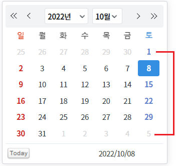
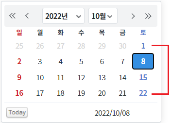
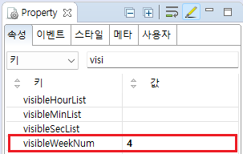
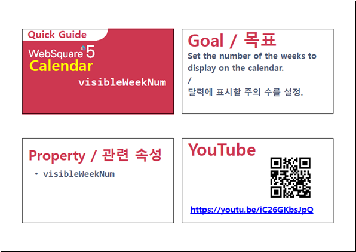

월(Month)에 보여지는 주(Week)의 수를 정의하는 예제입니다.
컴포넌트의 기본 설정값
컴포넌트에 월에 보여지는 주를 4로 설정한 상태
예제를 비교하기 위해 초기 월이 10월로 지정되었습니다.
설정별로 구성된 컴포넌트의 주(Week)를 확인합니다.
월(Month)에 보여지는 주(Week)의 수의 기본값은 6입니다.
그림 1.브라우저(Chrome) 실행 예시 - 기본 설정

그림 2.브라우저(Chrome) 실행 예시 - 월에 보여지는 주의 수를 4로 설정

STEP1. 속성 정의하기
컴포넌트의 속성 visibleWeekNum 을 4로 정의합니다. 이 속성을 적용하지 않은 경우 기본값은 6입니다.
그림 3.웹스퀘어5 SP5 스튜디오의 Property View(속성창) 예시

<!-- calendar의 소스 본문 예시 --> <w2:calendar visibleWeekNum="4"> </w2:calendar>
visibleWeekNum
[웹스퀘어5 SP5 개발 가이드] Calendar
링크 : https://docs1.inswave.com/sp5_user_guide/8df43d1f59fab704#56b80cc9fef2c150
[웹스퀘어5 SP5 개발 가이드] Calendar 표시할 주(Week)의 수 설정
링크 : https://docs1.inswave.com/sp5_user_guide/8df43d1f59fab704#eb1ff2ee40cd08f5
Calendar 표시할 주(Week)의 수 설정
링크 : https://youtu.be/iC26GKbsJpQ
